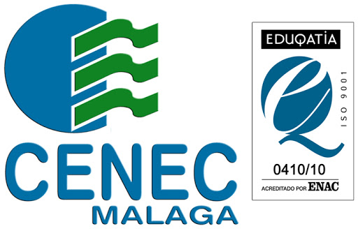

RITA Mª MESA JIMENEZ.
Soy una mujer, madre y malagueña y tengo 38 años.Me he dedicado y he trabajado durante muchos años en el mundo de la electrónica, exactamente en fábricas del Parque Tecnológico de Málaga. Para ello me decidí a estudiar un Grado Medio de Técnico en Equipos Electrónicos de Consumo, mientras también trabajaba en ello.Fuerón mis principios en el mundo laboral y en los que apredí muchas cosas, tanto a nivel personal y laboral.
Después de trabajar durante siete años en el mundo de la indústria y otros relacionados con la electrónica, también he tenido la ocasión de trabajar en la hostelería, trabajo duro y muy sacrificado más, si a la vez ejerces de madre soltera,en etos tipos de trabajos es cuando te das cuenta, al menos yo, de que estas hecha de otra pasta, y quieres hacer algo más y avanzar intelectualmente.
Actualmente me encuentro cursando un curdo de Grado superior, Desarrollo de Aplicaciones Multiplataformas, en la Academia y Centro de Formación Cenec en Málaga. Es una rama en el ámbitos de estudios que jamas llegué a pensar que me iba a llamar la atención. Y hoy por hoy quiero aprender y saber muchas cosas relacionadas con este sector, hay muchas cosas que aprender y siempre se está actualizando y ampliando. Me llama mucho la atención el saber todo lo que abarca y conllevo lo que nosotros, simplemente vemos en la pantalla, el saber que detrás de todo esto hay mucho empeño y mucha labor humana.